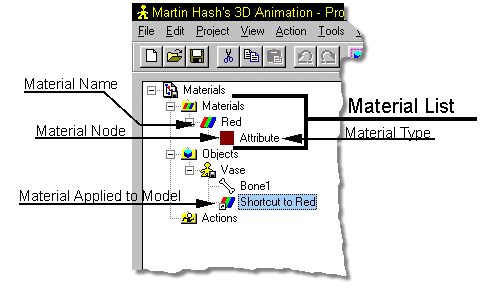

Located in the Project Workspace, the Materials Editor is available to you the
entire time you’re working. Every object in a choreography has a list of
materials on it.
Located in the Project Workspace, the Materials Editor is available to you the
entire time you’re working. Every object in a choreography has a list of
materials on it.

Each item in the Material List is called a Node. A Material many times consists of many Nodes. Any indented Nodes are children of another Node. Since only Nodes at the far left are actual Material files, they are the only Nodes that can be saved or have their Scale set.
Tell Me About:
Creating a New Material
Adding an Existing Material
Removing a Material
Material Types
Global Axis